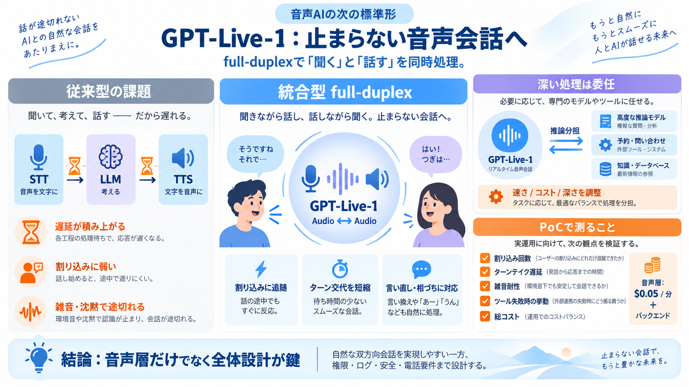

GPT-Live-1 API Pricing: $0.05/Minute Voice Model
GPT-Live-1 is available now as OpenAI's full-duplex voice layer: it can listen and speak simultaneously, handle interrup…

認識→推論→合成の待ち時間が積み上がる。
途中で割り込まれると文脈保持が崩れやすい。
沈黙・雑音・言い直しで会話が途切れやすい。
STT → LLM → TTS
各段の待ちと受け渡しが、割り込み耐性と遅延の壁になる。
Audio ↔ Audio（同時推論）
割り込み・相づち・言い直しに追随しやすくする。
full‑duplexで割り込みとターン交代をなめらかに。
タスク難易度に応じて「速さ/コスト/深さ」を配分。
予約・問い合わせ等の外部機能を呼び出す設計が可能。
インタラクティブ性で高評価（リリース記載）。
割り込み回数が約80%減少（早期評価事例）。
相づち・中断・言い直しに追随。
会話の交代遅延（ターンテイク）を改善。
背景雑音・沈黙で途切れにくくする。
自然さだけでなく、人格の一貫性を作る。
ブランドボイス（Brand voice）に接続しやすい。
音声の改善だけでは解決しない。
失敗の形が変わり、従来監視が不十分になり得る。
エスカレーション設計と安全設計が必須。
割り込み回数、ターンテイク遅延、沈黙時の挙動。
ツール呼び出し頻度、権限境界、失敗時の挙動。
$0.05/分 × 会話時間（および発話量）
バックエンドモデル、ツール委任回数、ログ/処理の追加。
回線由来の遅延・品質変動。
誰が話しているかの認識が崩れると破綻しやすい。
同意、個人情報、記録、対応範囲の制限。
自然な双方向、ターン交代の改善、音声体験の磨き込み。
評価条件の再現、ツール委任設計、安全・コスト・電話要件。
GPT-Live-1 is available now as OpenAI's full-duplex voice layer: it can listen and speak simultaneously, handle interrup…
We’ll continue to expand voice options and language availability over the coming months. ## Pricing & Availability GPT…
97.3% on Artificial Analysis’s Conversational Dynamics benchmark. 80.1% on Full Duplex Bench v1.5 interactivity. 0.798…
There's no per-minute price; it's billed per audio token. Derived from the July 2026 rates, a typical agent runs about $…
00:00 5:20 PM · Sep 10, 20263.7MViews 380 @OpenAIDevs OpenAI Developers OpenAI @OpenAIDevs GPT-Live-1 is…